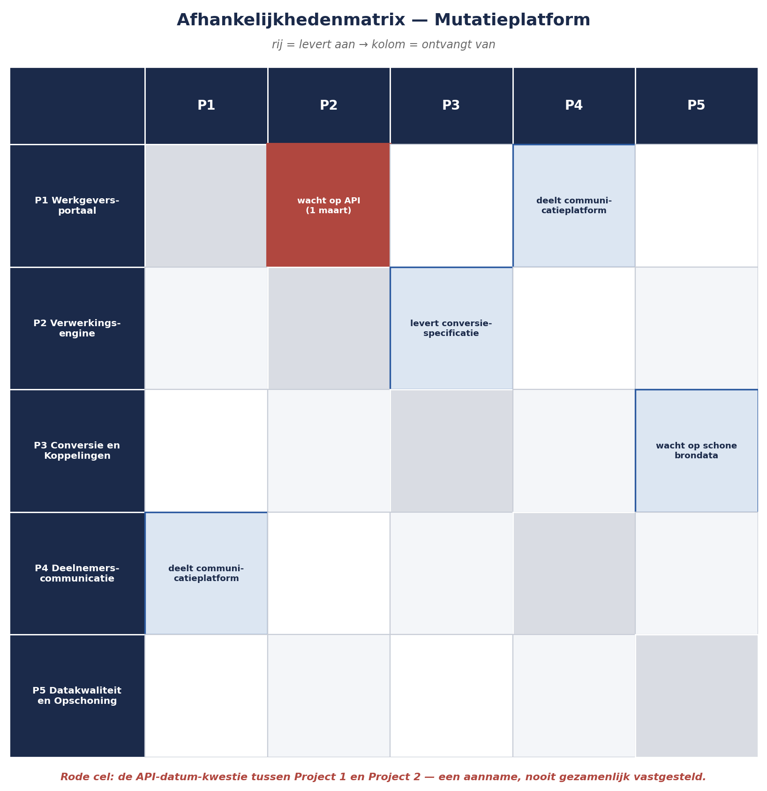

Deel 13 — Identificatie op programmaschaal
Niveau 2 — Professional · Reader
13.0 Vijf sessies, één blinde vlek
Elk van de vijf projecten binnen het Mutatieplatform heeft, naar het voorbeeld van niveau 1, een eigen identificatiesessie gehouden. Vijf registers, stuk voor stuk vakkundig opgebouwd volgens de technieken uit deel 4. En toch mist Sanne Bakhuis iets — een categorie risico die in geen van de vijf registers voorkomt, terwijl ze, achteraf bezien, overduidelijk aanwezig was.
Project 1 (Werkgeversportaal) gaat ervan uit dat Project 2 (Verwerkingsengine) op 1 maart een werkende API oplevert. Project 2 gaat ervan uit dat die datum “richtinggevend” is, geen harde toezegging. Beide aannames stonden, keurig geformuleerd, nergens in een risicoregister — want vanuit het perspectief van elk project apart was er niets vreemds aan de hand. Pas als je de twee registers naast elkaar legt, wordt zichtbaar dat er een risico bestaat dat aan geen van beide projecten toebehoort, en dus door geen van beide identificatiesessies is gevonden.
13.1 Waarom projectgebonden identificatie hier tekortschiet
De vijf identificatietechnieken uit deel 4 (niveau 1) werken uitstekend binnen de grenzen van één project — dat is precies waar ze voor zijn gebouwd. Het probleem is dat elke sessie, per ontwerp, begrensd is tot de context en criteria van dát ene project (deel 3, niveau 1). Een risico dat tussen twee projecten ontstaat, valt buiten beide begrenzingen tegelijk.
Kernzin 8 van de cursus: op programmaschaal zit het gevaarlijkste risico zelden ín een project — het zit in de naad ertussen, waar niemand zich uit zichzelf verantwoordelijk voelt.
Dit is geen kritiek op de vijf projectteams. Het is een structureel gegeven: niemand kan tegelijk twee begrensde werelden overzien vanuit een positie binnen een van de twee. Daarvoor is een aparte, programmabrede blik nodig — precies de reden dat Sanne’s rol als programma-risicomanager bestaat.
13.2 Een taxonomie voor programmarisico
Waar deel 4 (niveau 1) werkte met projectcategorieën (financieel, juridisch, technisch, organisatorisch, extern, reputatie), vraagt programmaschaal een aanvullende, eigen taxonomie — gericht op wat er tússen projecten kan misgaan:
| Categorie | Wat het betreft |
|---|---|
| Afhankelijkheden | Project A levert iets waar Project B op rekent — een deliverable, een datum, een specificatie |
| Gedeelde middelen | Capaciteit, budget of infrastructuur die meerdere projecten tegelijk claimen |
| Gedeelde leveranciers | Eén externe partij die aan meerdere projecten tegelijk levert (zie ook deel 6, niveau 1, secundair risico) |
| Integratiepunten | Technische of procesmatige koppelvlakken tussen wat projecten afzonderlijk opleveren |
| Gedeelde aannames | Iets waarvan meerdere projecten stilzwijgend uitgaan, zonder dat het ooit gezamenlijk is getoetst |
| Governance en besluitvorming | Het risico dat de coördinatielaag zelf (Sponsoring Group, programmabureau) een bottleneck wordt in plaats van een oplossing |
Deze zes categorieën zijn niet bedoeld ter vervanging van de projectcategorieën, maar als aanvulling — een aparte doorloop, apart gefaciliteerd, met apart samengestelde deelnemers.
13.3 Technieken voor programmaschaal
De afhankelijkhedenmatrix. Een tabel met de vijf projecten op beide assen, waarin voor elk paar wordt vastgelegd: is er een afhankelijkheid, in welke richting, en wat is de aard ervan (levert data, levert specificatie, deelt infrastructuur)? Deze matrix, eenmaal opgesteld, is zelf een identificatie-instrument: elke ingevulde cel is een kandidaat-risico dat de vraag “wat als deze afhankelijkheid niet wordt nagekomen” verdient.
De cross-project workshop. Anders dan de projectsessies uit deel 4, worden hier bewust vertegenwoordigers van meerdere projecten tegelijk uitgenodigd — niet om over hun eigen project te praten, maar specifiek over de raakvlakken. De kernvraag: “waar rekent jouw project op iets van een ander project, en is dat ooit hardop bevestigd?”
Programmabrede pre-mortem. Een variant op de techniek uit deel 4: “stel je voor dat elk van de vijf projecten op zichzelf is geslaagd, en het programmadoel is tóch niet gehaald — wat is er gebeurd?” Deze vraagstelling dwingt deelnemers voorbij hun eigen projectgrens te denken, omdat het scenario per definitie uitsluit dat een individueel project de oorzaak is.
Horizon scanning. Risico’s van buiten het programma — een naderende wetswijziging, een marktontwikkeling, een technologische verschuiving — die niet aan één project toe te schrijven zijn maar het hele programma kunnen raken. Dit is minder een sessietechniek dan een doorlopende praktijk: periodiek, bijvoorbeeld ieder kwartaal, kort stilstaan bij “is er iets in de buitenwereld veranderd dat relevant is voor het programma als geheel?”
Aannametoetsing over projectgrenzen heen. Een uitbreiding van de aannameanalyse uit deel 4: niet alleen het eigen projectplan doorlopen op aannames, maar expliciet vragen of andere projecten dezelfde aanname delen — en of ze die op dezelfde manier interpreteren. De API-datum uit 13.0 is hier het schoolvoorbeeld: beide projecten hadden een aanname, maar geen van beide wist dat de ander een andere interpretatie van diezelfde aanname had.

13.4 Sanne’s cross-project workshop
Met de afhankelijkhedenmatrix als uitgangspunt organiseert Sanne een workshop met één vertegenwoordiger per project. Binnen twee uur worden acht nieuwe risico’s geïdentificeerd die in geen van de vijf projectregisters stonden — onder meer:
De API-datum-kwestie (13.0), nu geformuleerd als volwaardige risicozin: doordat Project 1 uitgaat van een harde opleverdatum voor de API van Project 2 op 1 maart, terwijl Project 2 deze datum als richtinggevend beschouwt en er geen gezamenlijk vastgestelde deadline is overeengekomen, kan Project 1’s eigen planning worden gebaseerd op een datum die Project 2 niet als bindend ervaart, waardoor de portaallancering vertraging oploopt zonder dat dit tijdig als gedeeld risico wordt gesignaleerd.
Een sequencing-risico tussen Project 3 en Project 5: Project 3 (Conversie en Koppelingen) plant de definitieve dataconversie voor april, uitgaand van schone brondata. Project 5 (Datakwaliteit en Opschoning) heeft de opschoning gepland tot en met mei. Geen van beide projectplannen had deze volgorde expliciet als afhankelijkheid benoemd — ze liepen “toevallig” parallel in de planning, zonder dat iemand had getoetst of april vóór mei problematisch is.
Een gedeeld leveranciersrisico: zowel Project 1 als Project 4 maken gebruik van hetzelfde externe communicatieplatform voor respectievelijk portaalmeldingen en deelnemersbrieven. Geen van beide projecten had dit gedeelde afhankelijkheidspunt bij de eigen leveranciersrisico’s opgenomen, omdat het risico voor elk project apart klein leek — pas de optelling van vraag vanuit twee projecten tegelijk maakt zichtbaar dat de leverancier capaciteitsproblemen kan krijgen.
Deze acht risico’s worden, net als de projectrisico’s, in een register vastgelegd — maar met een aanpassing die deel 17 verder uitwerkt: een programmarisico heeft zelden één natuurlijke eigenaar uit een van de vijf projecten. Wie is eigenaar van de API-datum-kwestie: Project 1, Project 2, of Sanne zelf namens het programma? Deze vraag krijgt in deel 17 een concreet antwoord.
Samenvatting van deel 13
- Projectgebonden identificatietechnieken (deel 4, niveau 1) zijn per ontwerp begrensd tot één project en missen daardoor risico’s die tussen projecten ontstaan.
- Kernzin 8: op programmaschaal zit het gevaarlijkste risico zelden ín een project — het zit in de naad ertussen, waar niemand zich uit zichzelf verantwoordelijk voelt.
- Een aanvullende taxonomie voor programmarisico: afhankelijkheden, gedeelde middelen, gedeelde leveranciers, integratiepunten, gedeelde aannames, governance/besluitvorming zelf.
- Vijf technieken: de afhankelijkhedenmatrix, de cross-project workshop, de programmabrede pre-mortem, horizon scanning, en aannametoetsing over projectgrenzen heen.
- Sanne’s workshop levert acht nieuwe risico’s op die in geen van de vijf projectregisters stonden, waaronder een aannameconflict tussen twee projecten en een niet-benoemde sequencing-afhankelijkheid.
- Programmarisico’s hebben vaak geen natuurlijke eigenaar binnen één project — een vraagstuk dat deel 17 oplost.
Vooruitblik
Deel 14 verlaat de kwalitatieve schalen van niveau 1 voor het eerst structureel: verwachtingswaarden, beslisbomen en drie-puntsschattingen, voor de besluiten op programmaschaal waar brede banden (laag/midden/hoog) niet meer precies genoeg zijn.